STILLNESS · 적막
끝나지 않은 전장
밤의 철불 절벽 · 광기의 병마용
절벽 아래, 오와 월의 병사들이 다시 걷고 칼을 맞댑니다.
살아 있던 날의 대장군
주홍색 갑옷 위로 얇은 흰 망토가 내려옵니다. 어깨를 둥글게 감싼 천, 곧게 떨어지는 두 자락과 절제된 테두리. 갈라진 흙 얼굴 대신, 희미하게 비치는 창백한 얼굴이 드러났습니다.

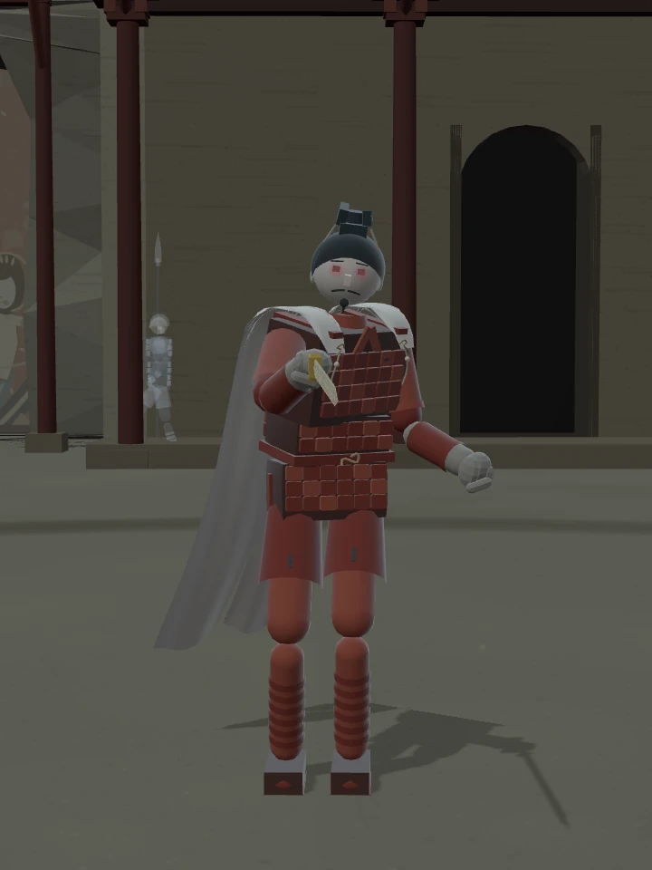

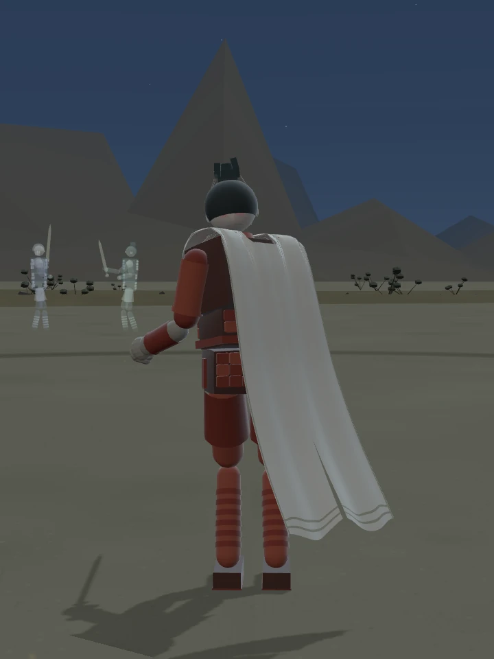
얼굴과 망토 수정 전후 보기

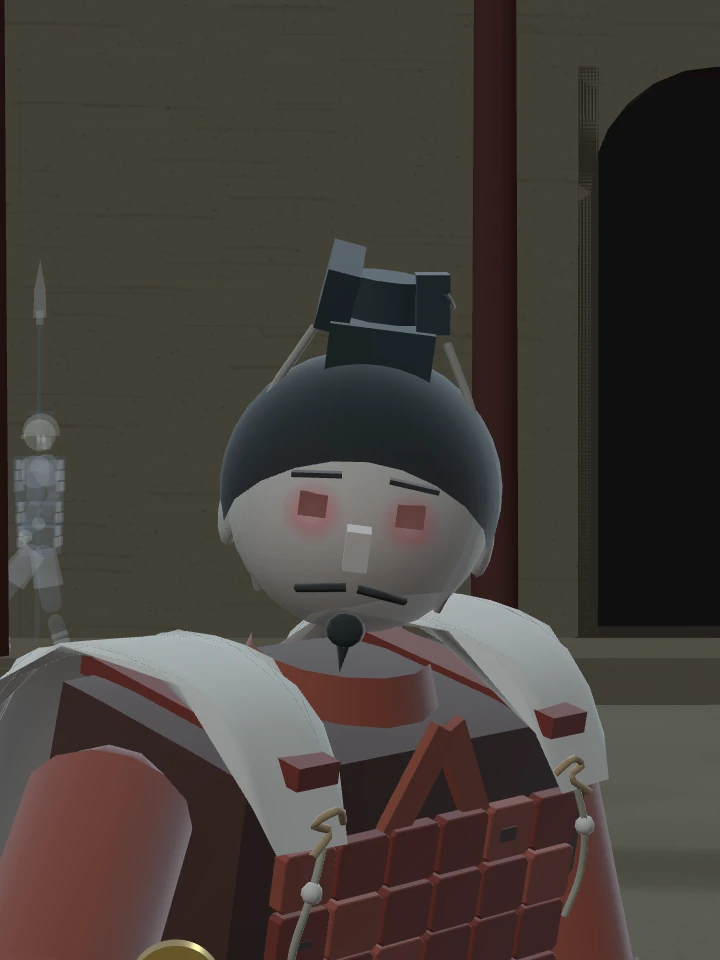

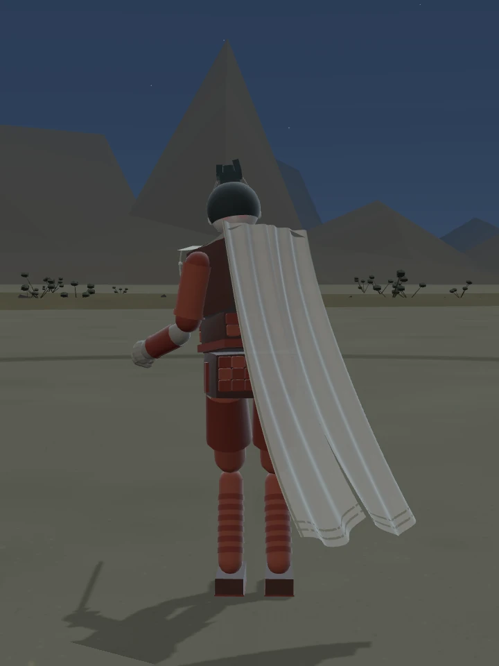
이 모습은 생전 신분을 암시하는 창작입니다. 특정 시대 복식의 고증 복원은 아닙니다. 월왕구천검과 기존 전투 능력, 흙 몸의 파손·사망 규칙은 그대로입니다.
돌아오지 못한 병사들
여덟 쌍의 병사가 필드 사방에서 전진하며 연속으로 베고, 받아내고, 물러서서 반격합니다. 오군은 둥근 투구와 큰 갑판, 월군은 관과 촘촘한 갑찰. 행군하는 네 명도 절벽 쪽과 반대편 길로 나뉘어 걷습니다. 세 명은 평범한 창을, 한 명은 검을 들고 걷습니다. 결판 없는 두 군대의 싸움이 되풀이됩니다.
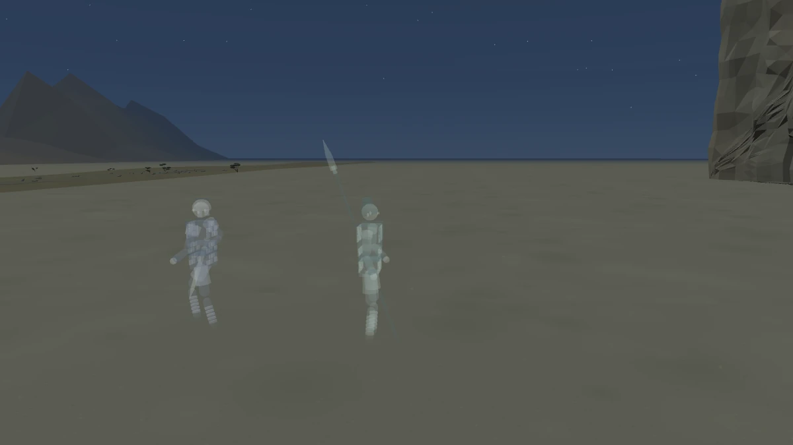
이전 운반 자세와 비교
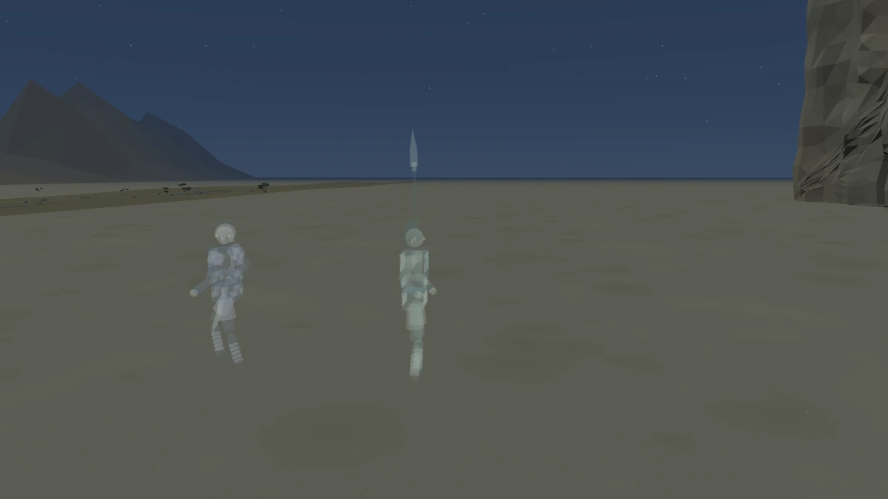
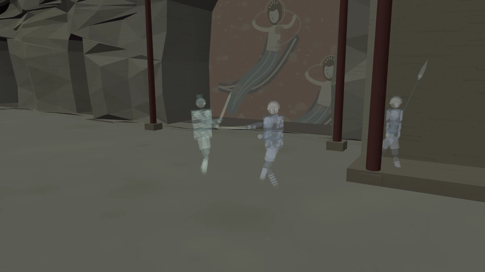
절벽의 전경과 행렬 보기
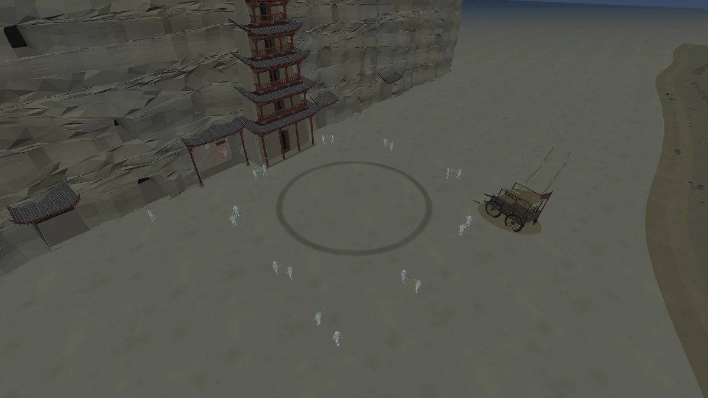
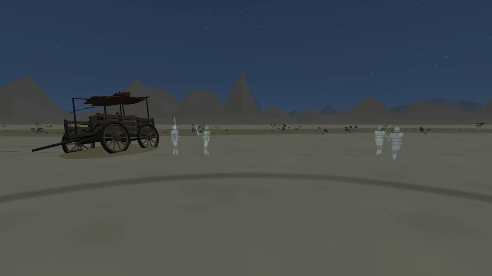
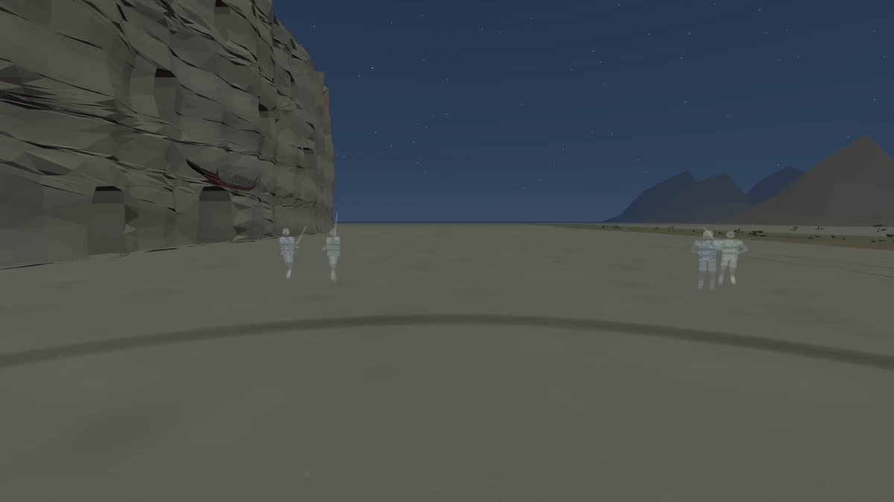
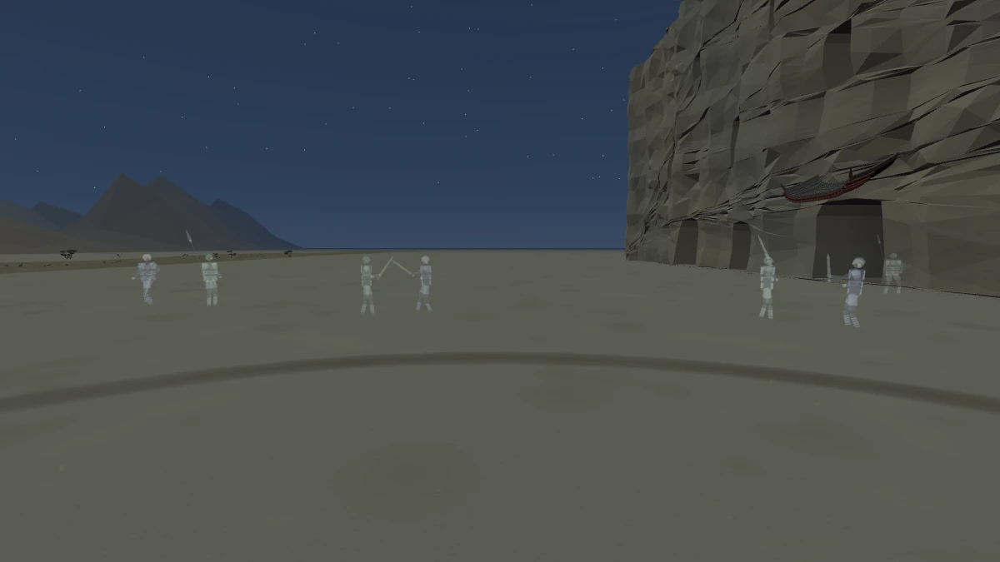
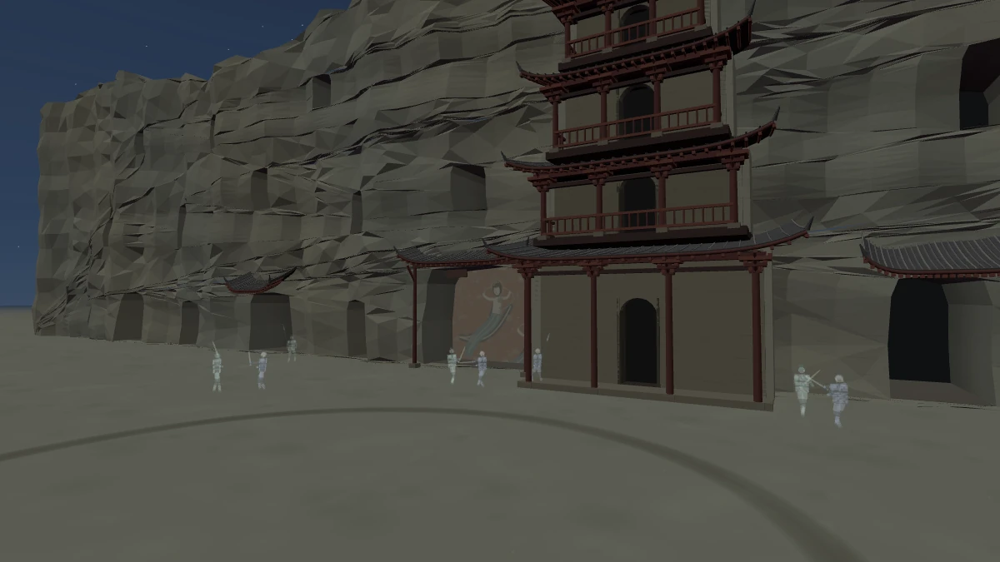
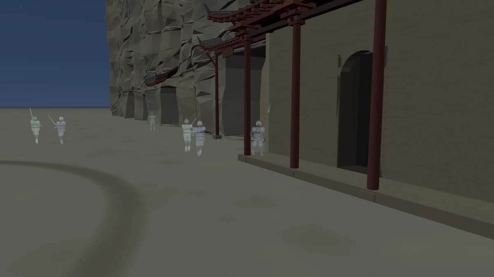
바람과 나무 간판의 삐걱임만 남아 있습니다. 망령들은 결투장 바깥의 기억으로, 플레이어를 공격하거나 가로막지 않습니다.